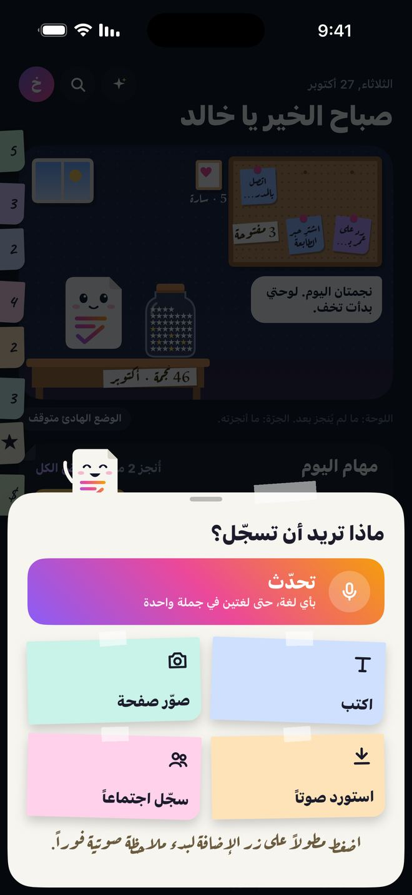
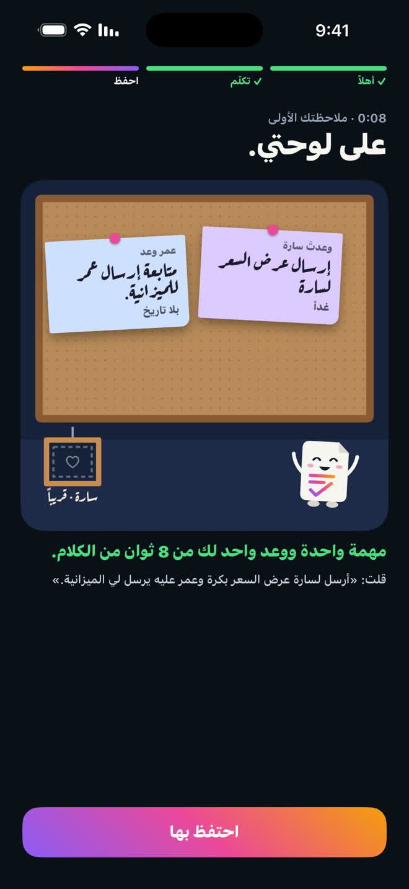
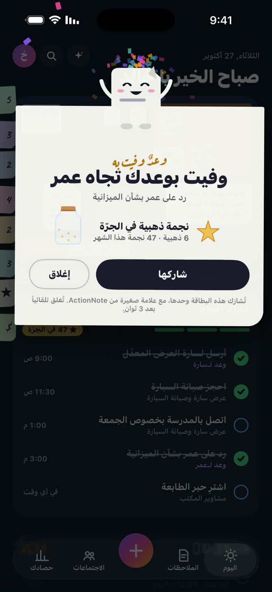
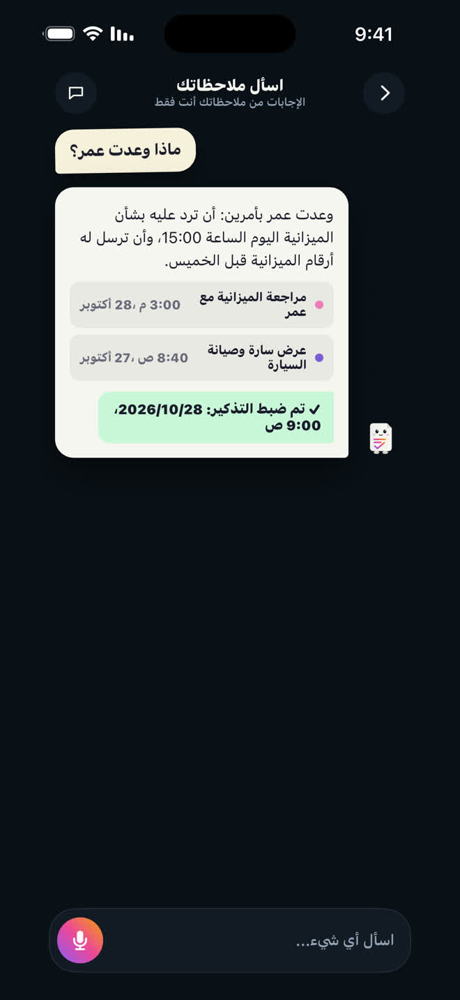
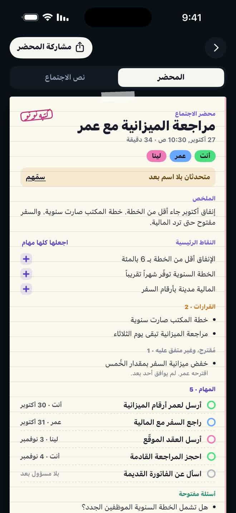
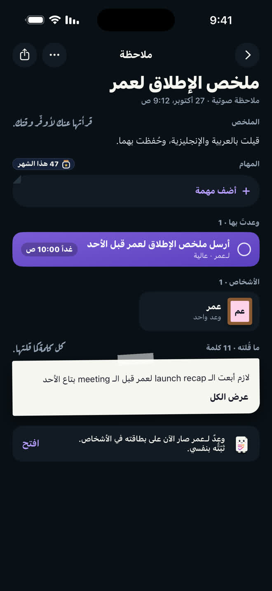

أهلاً، أنا نوتو. هكذا أعمل.
دليل NotoMix
كل جزء في التطبيق ببضع خطوات، مع الشاشات الحقيقية. بلا فيديوهات طويلة. اقرأ ما تحتاجه وارجع إلى يومك.
مكتوب لإصدار NotoMix 2.0 على الآيفون01 · البداية
ملاحظتك الأولى
تكلّم كما يخرج الكلام منك. لا بأس بالفوضى، فترتيبها شغلي.
- اضغط زر + في وسط الشريط السفلي. ستسألك نافذة: ماذا تريد أن تسجّل؟
- اختر واحداً: تحدّث (بأي لغة، حتى لغتين في جملة واحدة)، أو اكتب، أو صوّر صفحة، أو استورد صوتاً، أو سجّل اجتماعاً.
- في الملاحظة الصوتية تكلّم ثم أوقف التسجيل. بعد ثوانٍ تصبح الملاحظة جاهزة ومرتّبة.

02 · ماذا تحصل عليه
ماذا تصير الملاحظة
كلام متشعّب يدخل، وصفحة مرتّبة تخرج.
- عنوان، وملخص قصير، والنقاط الرئيسية.
- مهام بالمواعيد التي قلتها بصوتك. اضغط متى أو الجرس بجانب المهمة لتضبط تذكيرها أو تغيّره.
- الوعود في الاتجاهين، بالأسماء: ما عليك يذهب إلى وعدتَ بها، وما على سارة أو عمر لك يذهب إلى وعدك بها آخرون.
- كلماتك نفسها تبقى تحت الملخص في ما قلته، كما هي، لتتأكد متى شئت.

03 · اليوم
اليوم وجرّة نوتو
تبويب اليوم هو يومك: مهام اليوم، وما وعدت به، وركني من الغرفة.
- علّم المهمة حين تنجزها، فتطير نجمة ورقية إلى جرّتي.
- وفِ بوعد لأحد، وتكون النجمة ذهبية، مع بطاقة وعدٌ وفيت به.
- تريد أن تخبره؟ شاركها تشارك هذه البطاقة وحدها، ولا شيء آخر من ملاحظاتك.

04 · اسأل
اسأل ملاحظاتك
كل ما قلته يصبح شيئاً تستطيع أن تسأله، بأي لغة.
- في تبويب اليوم اضغط زر النجمة اللامعة في الأعلى. ويمكنك أيضاً كتابة سؤالك في البحث في تبويب الملاحظات.
- اسأل كما تسأل شخصاً: ماذا وعدتُ عمر؟
- الجواب يذكر الملاحظات التي جاء منها. اضغط أياً منها لتقرأ الأصل.

05 · الاجتماعات
الاجتماعات
ضع الهاتف على الطاولة. بلا بوت، ولا دعوة، ولا رابط.
- افتح تبويب الاجتماعات واضغط ابدأ اجتماعاً. أضف عنواناً ومن سينضم إن أردت، وكلاهما اختياري.
- اختر ما تريد أن تحصل عليه، ثم اضغط ابدأ الاجتماع.
- أوقفه مؤقتاً أو أنهِه من الشاشة، أو من شاشة القفل، أو من Dynamic Island. وعلّم هذه اللحظة تثبّت نقطة تريد أن تجدها لاحقاً.
- يصلك إشعار حين يصبح محضرك جاهزاً: أسماء المتحدثين، والقرارات، والأسئلة المفتوحة، ومهام كل شخص.

06 · الورق
صوّر صفحة
سبّورة، أو ورقة من محاضرة، أو لقطة شاشة لمحادثة طويلة.
- اضغط + ثم صوّر صفحة. التقط أو اختر حتى خمس صفحات أو لقطات شاشة.
- أقرأ كل صفحة وأكتبها كأي ملاحظة أخرى.
- أي شيء مطلوب منك يصبح مهمة، بموعده إن كان مكتوباً.
07 · من تطبيقات أخرى
أدخل الرسائل الصوتية وغيرها
الرسالة الصوتية ذات السبع دقائق من صديقك، تقرؤها في ثوانٍ.
- في واتساب أو تيليجرام أو البريد أو الملفات أو الصور أو أي تطبيق، اضغط مشاركة على رسالة صوتية، أو نص، أو حتى خمس صور.
- اختر NotoMix من قائمة المشاركة.
- تصبح ملاحظة مثل ملاحظاتك: ملخص ونقاط رئيسية ومهام.
09 · اللغات
لغتان في ملاحظة واحدة
عربي وإنجليزي في الجملة نفسها، هكذا يتكلم كثير منا. تكلّم هكذا.
- سجّل فقط، وانتقل بين اللغتين في منتصف الجملة متى شئت.
- تريد كل ملاحظة بلغة واحدة؟ من الإعدادات فعّل نظّم بلغتي. تُكتب الملاحظات بلغة التطبيق، مهما كانت اللغة التي تتحدث بها.
- حين تُكتب الملاحظة بلغتك، تظهر في أعلاها شارة ⇄ تقول بأي لغة تكلّمت. اضغطها لترى الملاحظة كما قلتها، واضغطها مرة أخرى لتعود.

10 · الصباح
موجز الصباح
إشعار واحد كل صباح: مهامك، وما استحق، ويومك.
- في تبويب اليوم اضغط صورتك في الأعلى، ثم الإعدادات.
- في موجز الصباح اختر وقت الملخص الذي يناسبك.
- فعّل تضمين التقويم لترى اجتماعاتك فيه أيضاً. تقويمك يُقرأ على الآيفون فقط.
11 · بلا فتح التطبيق
سيري والأدوات وشاشة القفل
أسرع طريق هو الموجود على شاشتك أصلاً.
- سيري: سجّل مع NotoMix أوقف التسجيل في NotoMix ابدأ اجتماعًا في NotoMix ماذا وعدت اليوم في NotoMix اسأل NotoMix
- زر الإجراءات (في iPhone 15 Pro وما بعده): الإعدادات، زر الإجراءات، اختصار، ثم NotoMix وتسجيل.
- الأدوات: يومك (متوسطة) تعرض ما يستحق وتتيح لك تعليمه منجزاً. وتسجيل سريع على الشاشة الرئيسية (صغيرة) أو تحت الساعة في شاشة القفل.
- مركز التحكم (iOS 18): أضف زر سجّل ملاحظة.
- أثناء التسجيل: تظهره شاشة القفل وDynamic Island، مع إيقاف مؤقت وإنهاء.
12 · تكلّم في أي تطبيق
لوحة مفاتيح NotoMix
أملِ في أي خانة نص، وأنا أحذف الأصوات الزائدة مثل اممم.
- افتح تطبيق الإعدادات في الآيفون: عام، لوحة المفاتيح، لوحات المفاتيح، إضافة لوحة مفاتيح جديدة، ثم NotoMix.
- اضغط NotoMix في تلك القائمة وفعّل السماح بالوصول الكامل. هو للميكروفون فقط: لا شيء مما تكتبه يُحفظ أو يُرسل.
- في أي تطبيق، انتقل إلى لوحة NotoMix بزر الكرة الأرضية، واضغط الميكروفون.
- يُفتح NotoMix ليستمع. ارجع إلى حيث كنت تكتب بالسهم أعلى الشاشة، وتكلّم. كلماتك تُكتب في ذلك التطبيق.
13 · على معصمك
ساعة Apple
سجّل من معصمك، حتى لو بقي الهاتف في البيت.
- افتح NotoMix على الساعة، فيبدأ التسجيل فوراً.
- اضغط أوقف وأرسل.
- تُرسل إلى الآيفون حين يكون قريباً، وتُرتّب هناك كأي ملاحظة أخرى.
14 · نظرة إلى الوراء
حصادك
ما سجّلته، وما أنجزته، والوعود التي وفيت بها.
- افتح تبويب حصادك واختر يوم أو أسبوع أو شهر أو سنة.
- شاهد يومك ساعة بساعة، واليوم الأكثر كلاماً، ومن وعدك بماذا.
- عمر ما زال مديناً لك بشيء؟ أرسل تذكيراً لطيفاً تفتح نافذة المشاركة مع رسالة ودودة، ولا أرسلها بنفسي أبداً.
15 · أشياؤك
حسابك وملاحظاتك
ملاحظاتك تعيش على آيفونك وفي iCloud الخاص بك.
- أول ملاحظة لا تحتاج حساباً. سجّل الدخول أو أنشئ حساباً متى شئت، من صورتك أعلى تبويب اليوم.
- حين يكون iCloud مفعّلاً تُنسخ ملاحظاتك احتياطياً هناك. الإعدادات تعرض وقت آخر نسخة، ونسخ الصوت والصور تفعّله أنت إن أردت.
- للمغادرة: الإعدادات، حذف الحساب. يحذف حسابك وملاحظاتك من هذا الجهاز ومن iCloud الخاص بك.